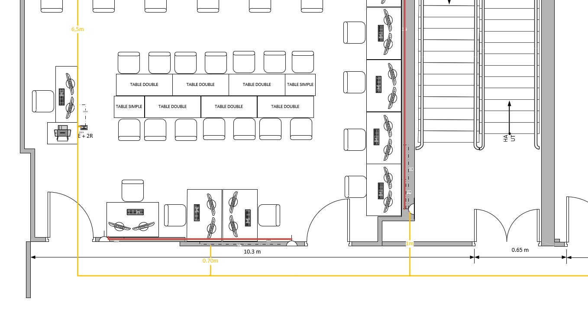
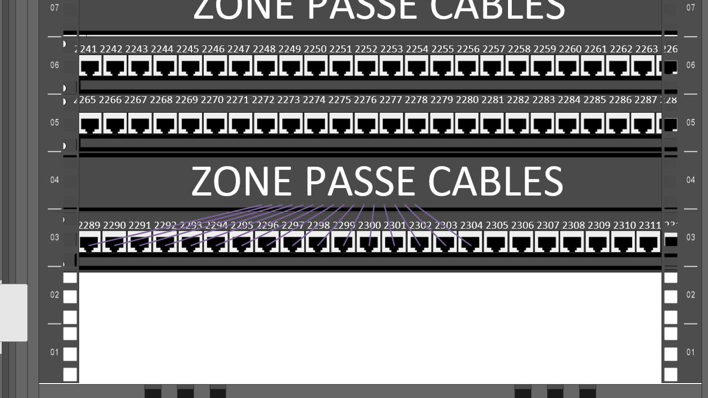

| Informations Complémentaire : | |
|---|---|
| Outils : Microsoft Visio & Excel | |
| Période : 13/12 - 15/01 | |
| Compétences Mises en Oeuvre | |
| - Gérer le patrimoine informatique - Répondre aux incidents et aux demandes d’assistance et d’évolution |
|
Dans ce projet, nous intervenons en tant que salarié de l’entreprise IT Partner, notre mission est de réaliser le chiffrage du Câblage informatique d'une salle de classe d’un bâtiment de l’établissement. Afin de réaliser ce projet, nous devons utiliser uniquement les éléments du catalogue Abix qui référence tous les équipements réseaux, et un accès a la salle en question
A l’issu de ce projet nous avons rendu :
|  |  |
Ce projet m'a beaucoup plus, j'ai trouve tres interessant le fait de devoir faire un plan realiste. La recherche de references et la mise en place de ce plan m'a beaucoup plus. J'ai appris a utiliser le logiciels Visio
De plus, j'ai développé mes compétences en autonomie ainsi que ma capacité à collaborer au sein d'une équipe.